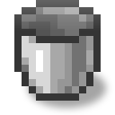

Помпа
alaindustrial:pump
Зведення
Насос — це LV-машина на EU/FE, яка перекачує рідини. Він знаходить у світі будь-яке джерело рідини (починаючи з блока перед собою і текучою рідиною далі), або забирає рідину із сусіднього бака, копить її у внутрішньому баку на 10 відер і сам виштовхує далі — у будь-який сусідній бак-приймач. Бак приймає будь-яку рідину (не лише лаву/воду), тому в нього можна залити й модову рідину — через капсулу або чужу ємність.
Бак тримає лише одну рідину за раз: поки він зайнятий одним видом, інший не приймається, доки не спорожніє. Змішування виключено навмисно — випадково злити два види в одну трубу не вийде.
Головний сценарій — годувати Геотермальний генератор лавою трубою, а не тягати відра руками; заодно помпа перекачує воду й будь-які інші рідини для майбутніх рідинних ланцюжків.
Енергія
Насос — чистий споживач енергії: він приймає EU/FE, нічого не віддає, і витрачає по 1000 EU/FE на кожне викачане відро.
| Поле | Значення |
|---|---|
| Роль | споживач із буфером |
| Буфер (EU/FE) | 4000 — помітно більше, ніж у більшості машин, щоб накопичити одразу на 4 відра |
| Макс. вхід (EU/FE/такт) | 32 (низький тир LV) |
| Макс. вихід (EU/FE/такт) | н/з (не віддає) |
| EU/FE за відро | 1000 — одна з найенерговитратніших машин |
Насос підключається до енергомережі як звичайний споживач — мережа знаходить його сама. Енергія списується лише в той такт, коли рідина реально забрана зі світу або сусіднього бака; заливка вручну через відра й проштовхування в приймач EU/FE не коштують.
Як машина низького тира насос приймає до 32 EU/FE за тик. При 1000 EU/FE/відро і ліміті 32 EU/FE/такт наповнити буфер на одне відро займає ~32 тики; буфер на 4000 EU/FE вміщує вартість 4 відер, тому навіть при рваному припливі енергії помпа рідко простоює.
Енергетика за гранями. Насос приймає EU/FE на п'яти робочих гранях; передня грань енергетично інертна (роз'єму там немає) — як у будь-якої горизонтальної машини. Тому кабель малює рукав лише до п'яти робочих граней, а до передньої — ні. Забір рідини — окрема підсистема, він і далі читає передню грань напряму, тож енергетична інертність передньої грані не змінює, звідки насос качає рідину.
Процесинг
Насос не використовує систему рецептів: він не переробляє предмети, а переміщує рідину. За один робочий такт він проходить три кроки.
| Крок | Дія | Умова |
|---|---|---|
| 0. Відра | спорожнити рідинне відро зі слота вводу в бак | у слоті вводу є відро лави/води, бак готовий прийняти, слот виводу вільний під порожнє відро |
| 1. Забір | взяти 1 відро рідини в бак | енергії в буфері вистачає на відро, у баку є місце і минула перерва між спробами пошуку |
| 2. Подача | виштовхнути рідину з бака в сусідні приймачі | у баку є рідина |
Забір. Помпа шукає рідину починаючи з блока прямо перед собою (тією гранню, якою дивиться на гравця). Якщо там сама рідина або пов'язана з нею текуча калюжа — помпа дістається нею до найближчого джерела (будь-якої рідини). Якщо у світі рідини немає, пробує забрати відро із сусіднього бака — того самого виду, що вже тримає, а при порожньому баку будь-якого виду, який сусід віддає. Обмеження
Радіус: до 32 блоків від помпи; Ліміт відвіданих: до 512 блоків за один скан (захист від лагів на великих розливах); Перерва: 1 секунда (20 тиків) між спробами пошуку — і після успіху, і після невдачі.
Знайдене джерело забирається в бак відром, а сам блок-джерело у світі безповоротно зникає (осушується). Течія, не-джерело рідина не викачується — вона лише веде пошук до джерела, а після його видалення розтікається назад за ванільними правилами. Якщо бак уже тримає іншу рідину, пошук навіть не запускається — помпа не витрачає такт даремно.
Подача. Помпа виштовхує рідину на всі боки, крім того, звідки щойно забрала (щоб не гнати її назад у джерело), і намагається віддати одразу весь бак за один такт будь-якому сусідньому приймачу — наприклад, баку геотермального генератора.
Під час роботи помпа загоряється (загоряється кожен такт, коли щось зроблено — забір, подача або заливка відра).
Інвентар
Чотири слоти в сітці 2×2 — для ручної заливки й зливу рідини. Це не основний спосіб роботи помпи, а зручне підспір'я.
| Слот | Ряд | Приймає | К-сть |
|---|---|---|---|
| Ввід заливки (0) | верхній | будь-яка повна рідинна ємність | до стека |
| Вивід заливки (1) | верхній | спорожніла тара (лише для видобування) | до стека |
| Ввід зливу (2) | нижній | будь-яка порожня рідинна ємність | до стека |
| Вивід зливу (3) | нижній | наповнена тара (лише для видобування) | до стека |
Будь-яка ємність, не лише відро. Слоти приймають усе, що вміє носити рідину: ванільні відра лави й води, нашу вакуумну капсулу з будь-якою рідиною, і ємності інших модів (їхні комірки, каністри, капсули). Помпа не зберігає список відомих предметів — вона запитує в самого предмета через стандартний рідинний інтерфейс завантажувача, тому чужі контейнери працюють самі собою, без правок з нашого боку.
Обмін іде строго по одному відру за раз і за принципом «все або нічого»: якщо бак не прийме ціле відро (немає місця або в ньому інша рідина) або тару нікуди покласти — не відбувається взагалі нічого, рідина й тара лишаються на місці. Це не витрачає EU/FE (ручна заливка, не насос).
Капсула — єдиний ручний шлях для модових рідин: ванільного відра для них не існує, а капсула приймає будь-яку.
Лійки й труби кладуть лише у вхідні слоти (0 і 2) і забирають лише з вихідних (1 і 3) — вихідні наповнює сама машина.
Внутрішній бак
| Поле | Значення |
|---|---|
| Місткість | 10 відер (10 000 мБ) |
| Приймає | будь-яка непорожня рідина, не лише лава/вода |
| Змішування | заборонено — поки бак зайнятий одним видом, інший не приймається, доки бак не спорожніє |
| Видобування | дозволено з будь-якого боку |
Лише один вид рідини за раз. Бак тримає не більше одного виду рідини за раз. Якщо він порожній — приймає будь-яку рідину (включно з модовою); поки зайнятий одним видом — інший відхиляється, доки не спорожніє. Змішати рідини випадково неможливо — це закладено в сам устрій бака.
Одиниця обсягу — мілібакет (мБ). Усередині бака все рахується в мілібакетах: 1 відро = 1000 мБ, а місткість бака — 10 000 мБ (ті самі 10 відер). Це значення однакове на обох завантажувачах — гравець бачить рівно ті самі обсяги незалежно від того, чи грає він на Fabric, чи на NeoForge.
Збереження й міграція. Після перезаходу бак відновлює і обсяг, і тип рідини — тип зберігається як повний ідентифікатор, тому будь-яка рідина переживає перезавантаження. Старі сейви (де бак знав лише лаву/воду) коректно підхоплюються.
Обмін з капсулами й чужими ємностями
Помпа — повноправний учасник рідинного обміну: її бак можна наповнювати й осушувати не лише через відерні слоти, але й нашою капсулою, і чужими ємностями інших модів.
Капсула (ручний ПКМ). Порожня рідинна капсула правим кліком по блоку насоса забирає рівно 1 відро рідини з бака й перетворюється на заповнену; заповнена капсула тим самим кліком наливає своє відро в бак (якщо там є місце й збігається/порожній варіант). Це працює на будь-якій грані блока й для будь-якої руки. Обмін має пріоритет над GUI: поки капсула в руці, ПКМ по насосу міняє рідину, а не відкриває меню; порожньою рукою або якщо обміну не вийшло — відкривається GUI. Із затиснутим Shift гра обходить блок і кличе обмін капсули напряму.
Чужі ємності й труби. Бак насоса доступний для труб, насосів і танків інших модів на будь-якій грані — вони можуть качати рідину з насоса й заливати її в насос в обидва боки, без ручного кліку.
Інтерфейс
У помпи є графічний екран із двома слотами (під відра) й двома смугами-індикаторами.
Тип: GUI з двома слотами (відра) й двома смугами: Ліва — рівень рідини в баку (росте знизу вгору). Бак заповнюється справжньою текстурою самої рідини (її блочною still-текстурою з рідним тінтом), викладеною плиткою 16×16 і обрізаною за рівнем — вода виглядає водою, лава лавою. Модові рідини малюються автоматично своєю текстурою. Права — буфер енергії. Tooltip при наведенні показує ім'я рідини + обсяг у мБ та EU/FE / місткість буфера. Стан блока: помпа повертається «обличчям до гравця» при розміщенні (цією гранню вона й забирає рідину) і загоряється, поки працює.
Властивості блока
Звичайний суцільний блок: ламається кайлом, при зламі заряд не зберігає (бак і рідина — зберігаються, див. внутрішній бак).
| Поле | Значення |
|---|---|
| Форма | повний куб (окклюдер) |
| Міцність | 3.0 |
| Вибухостійкість | 6.0 |
| Інструмент | кайло |
| Звук | метал |
| Зберігає заряд при зламі | ні |
Звук
Під час роботи насос видає мокре всмоктування рідини в трубу — петля (патерн A, 0.35 за замовчуванням). Замовкає, коли машина простоює.
Особливість насоса проти решти машин патерна A: перенесення відра атомарне — воно цілком відбувається за один тик, а не розтягнуте на такти обробки, як помел у дробарки. Тому lit (а разом із ним і петля) тримається ще тиків після останнього перенесення (за замовчуванням 60 тиків = 3 с). Без цієї затримки індикатор і звук спалахували б на один тик, і почути роботу насоса було б неможливо. За безперервного відкачування нові перенесення перезапускають відлік раніше, ніж він спливе, — насос читається як безперервно працюючий, без блимання.
Рецепти
Насос збирається на верстаку на базі корпусу машини з електронною схемою — як і решта LV-машин моду. Рецептів переробки в нього немає: він переміщує рідину, а не переробляє предмети.
Прогресія
Тир: LV. Вхід у рідинну гілку моду. Потребує живлення від LV-джерела; при 1000 EU/FE за відро одна помпа помітно навантажує стартову лінію. Відкриває: автоматичне живлення геотермального генератора й збір нафти для гумового ланцюжка.
Пов'язане
Геотермальний генератор — головний споживач лави. Переносний бак — куди складати викачане. Рідинна труба — переганяє рідину між помпою й баками. Вакуумна капсула — ручна тара, зокрема для модових рідин. Нафта — основна ціль викачування.
Крафт
Крафт на верстаку

▶
Помпа